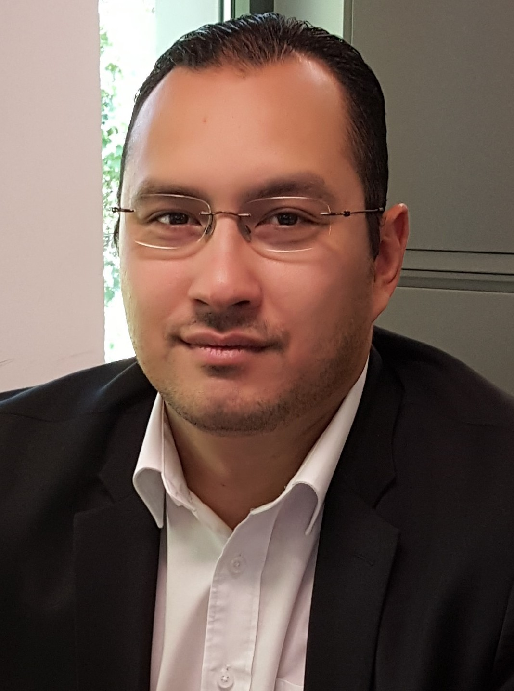
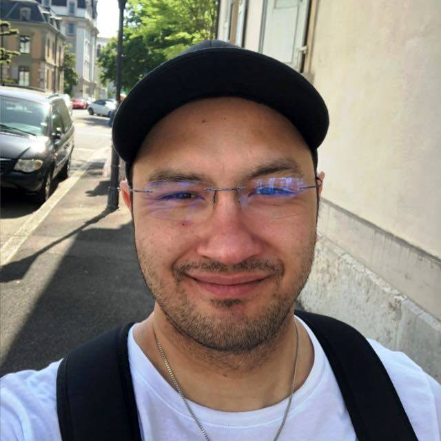
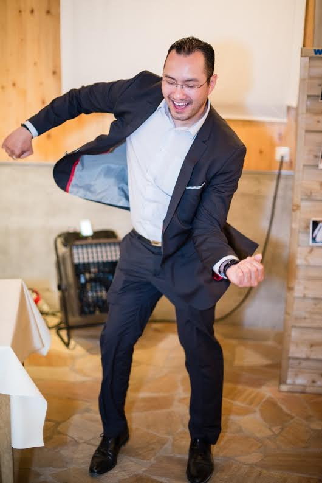
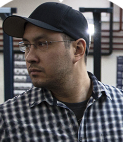

close
Je suis Eric





... qui rime aussi avec "magnifique" ! De nature joviale, bon vivant et qui sait croquer la vie à pleines dents. J'apporte
mon humour et mon énergie à ma famille.
Doyen de la lignée masculine des Diep en Suisse mais aussi proche de Mère, j'assume mon rôle de grand frère et apporte
mon soutien moral et physique à tous ceux qui m'entourent, autant que possible,
dans chaque situation de la vie courante. L'autonomie et la débrouillardise sont des valeurs que j'ai forgées à
travers mes nombreuses expériences, tout au long de mon existence.